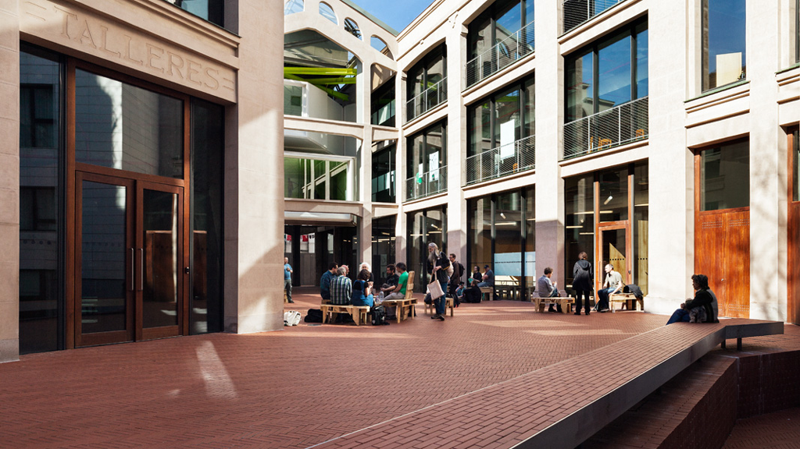

PyDay Madrid 2016, 16 y 17 de septiembre, Medialab-Prado

¡Ya está aquí el primer PyDay de Python Madrid!
Y te preguntarás ¿qué es el PyDay? Es un evento coordinado que organizan las comunidades locales de Python para dar a conocer el lenguaje, la comunidad y, sobre todo, pasar un buen rato.
En Python Madrid hemos estado organizando nuestro PyDay, que se celebrará el 16 y el 17 de septiembre en Medialab-Prado ¡Esperamos que puedas venir y conocernos!
Puedes apuntarte en nuestro Meetup http://www.meetup.com/es-ES/Madrid-Python-Meetup/events/233978994/
Si quieres conocer los otros PyDays que se están organizando, échale un vistazo a http://www.es.python.org/pyday2016/
¡Nos vemos en el Medialab!
Agenda
Charlas - Viernes 16
- 19:00 - Presentación
- 19:15 - Rodrigo Cabello, ingeniero de software en Plain Concepts, nos hablará sobre diferentes herramientas de Microsoft para programar en Python.
- 20:00 - Alejandra Figueiras hablará sobre el proyecto The Data Incubator, un coding bootcamp intensivo en Estados Unidos.
- 20:30 - Mariana Vargas, dará una charla sobre Machine Learning / Procesamiento del Lenguaje Natural [pendiente de confirmar]
- 21:00 - PyRefrescos
Talleres - Sábado 17
- 10:00 - Introducción al lenguaje Python, por Siro Moreno. En este taller se abordará una introducción muy básica al lenguaje para gente que está poco familiarizada con la programación.
- 13:15 - Pausa para comer
- 14:30 - Introducción a Bokeh, por Claudia Guirao, de Kernel Analytics.
- 16:30 - OpenSpaces, donde podrás consultar tus dudas con otros miembros de la comunidad Python o colaborar en equipo en tus proyectos Python, ¡la oportunidad perfecta de concer las caras de la comunidad Python Madrid!
- 19:00 - Cierre